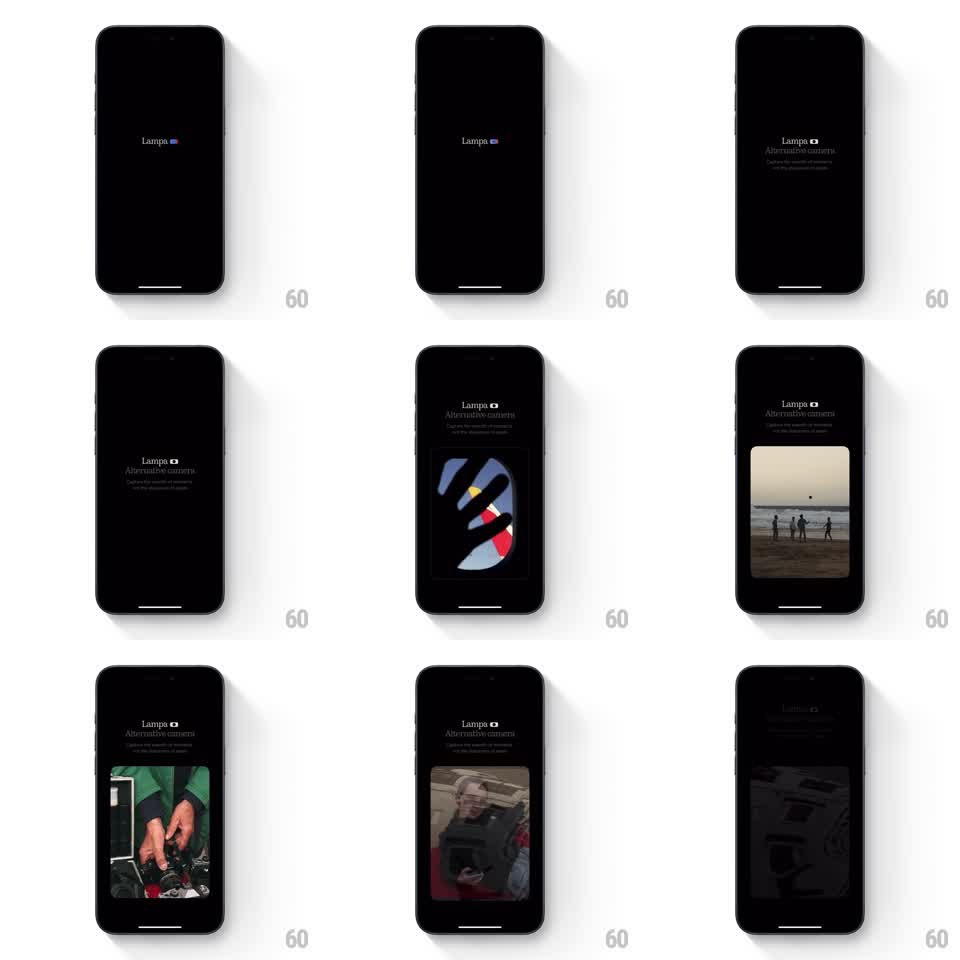

Media
Frame-by-frame

Rebuild this animation 1:1: Lampa's splash - the wordmark and tagline stage themselves line by line on black, then a gallery of photo cards slides up through the frame.

Rebuild this animation 1:1: Lampa's splash - the wordmark and tagline stage themselves line by line on black, then a gallery of photo cards slides up through the frame. ## Integration Integration: stack-agnostic spec - springs given as stiffness/damping, timed motions as duration + curve; map every value to your framework and animation library of choice. ## Scene Black splash screen: the "Lampa" wordmark with a small square logo mark, the "Alternative camera" headline and a line of subcopy, then tall rounded photo cards (abstract dark art, beach silhouettes, hands working, a portrait) sliding through. ## Motion spec Pattern: staged typographic intro with sliding gallery, ~3.5s. - The wordmark fades in alone (500ms, ease-out) and holds. - "Alternative camera" and the subcopy fade up beneath it (400ms each, 10px rise, 200ms stagger between them). - The first photo card rises from the bottom into center frame (spring stiffness 240 damping 22), then each next card slides up over it (350ms, ease-out, ~700ms apart), a slow vertical gallery pass. - The header text stays fixed while the cards travel beneath it. - The last card settles centered; the sequence holds on it. ## Calibration - Type first, gallery second - the cards never start until the full header is on screen. - Cards slide at a stately pace; this is a gallery, not a carousel snap. ## Reduced motion Header and one card fade in static. ## Don't miss - Each card fully covers the previous one as it passes - it is a stack being dealt upward, not a scroll. - The wordmark's square mark gets a subtle color pulse once on entry (opacity sweep, 400ms) - the only accent in an otherwise monochrome intro.